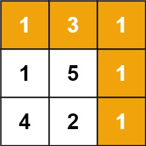

books / hot100 / 03-题解 / 16-多维动态规划
64. 最小路径和
← 多维动态规划专题 · 总目录 · 复习清单
题目与约束
给定一个包含非负整数的 m x n 网格 grid ，请找出一条从左上角到右下角的路径，使得路径上的数字总和为最小。
说明：每次只能向下或者向右移动一步。
示例 1：

输入：grid = [[1,3,1],[1,5,1],[4,2,1]]
输出：7
解释：因为路径 1→3→1→1→1 的总和最小。
示例 2：
输入：grid = [[1,2,3],[4,5,6]]
输出：12
提示：
m == grid.lengthn == grid[i].length1 <= m, n <= 2000 <= grid[i][j] <= 200
核心不变量
当前位置最小代价来自上方和左方较小者。
完整推导
思路推导
-
直觉与痛点（局部贪心的灾难）：
很多人的第一直觉是“走一步看一步”：每次站在一个格子里，对比下面和右边的数字，谁小就往谁走。
痛点：这种纯贪心是致命的！比如面临向右是 1，向下是 2。你贪心选了 1，结果 1 的后面跟着一个巨大的 100；而 2 的后面全都是 0。贪心算法无法预知未来，必然掉进陷阱。
-
降维破局（全局视角的代价沉淀）：
我们要用动态规划的“上帝视角”来俯瞰全局。
闭上眼睛想一想：到达坐标为
(i, j)的格子，只可能是从上面(i-1, j)走下来的，或者是从左边(i, j-1)走过来的。既然只有这两条路，那我只要问：
“上面那个格子，它一路走过来的历史最低成本是多少？”
“左边那个格子，它一路走过来的历史最低成本是多少？”
我从中挑一个最小的，然后加上我自己这个格子的过路费，就是到达我这里的最低总成本！
-
核心微操（状态转移方程与边界）：
状态转移方程极其优雅：
边界基石：
- 网格的左上角起点：起点就是自带的数字。
- 第一行：只能从左边一路走过来，不断累加。
- 第一列：只能从上面一路走下来，不断累加。
Java 实现（满分一维空间压缩版）
同样的，我们可以将二维 DP 数组压缩成一个一维的滚动数组，来把空间复杂度优化思路到 O(n)。
C++ 实现
实现来源：经典解法实现
- dp[i][j] = 到达 (i,j) 的最小路径和 = min(上, 左) + grid[i][j]
- 首行只能从左来，首列只能从上来，先初始化
- 其余逐格递推，右下角即答案
class Solution { public: int minPathSum(vector<vector<int>>& grid) { int m = grid.size(), n = grid[0].size(); vector<vector<int>> dp(m, vector<int>(n)); dp[0][0] = grid[0][0]; for (int c = 1; c < n; c++) dp[0][c] = dp[0][c-1] + grid[0][c]; for (int r = 1; r < m; r++) dp[r][0] = dp[r-1][0] + grid[r][0]; for (int r = 1; r < m; r++) for (int c = 1; c < n; c++) dp[r][c] = min(dp[r-1][c], dp[r][c-1]) + grid[r][c]; return dp[m-1][n-1]; } };Python 实现
实现来源：经典解法实现
- dp[i][j] = 到达 (i,j) 的最小路径和 = min(上, 左) + grid[i][j]
- 首行只能从左来，首列只能从上来，先初始化
- 其余逐格递推，右下角即答案
class Solution: def minPathSum(self, grid: List[List[int]]) -> int: m, n = len(grid), len(grid[0]) dp = [[0] * n for _ in range(m)] dp[0][0] = grid[0][0] for c in range(1, n): dp[0][c] = dp[0][c-1] + grid[0][c] for r in range(1, m): dp[r][0] = dp[r-1][0] + grid[r][0] for r in range(1, m): for c in range(1, n): dp[r][c] = min(dp[r-1][c], dp[r][c-1]) + grid[r][c] return dp[m-1][n-1]Go 实现
实现来源：经典解法实现
- dp[i][j] = 到达 (i,j) 的最小路径和 = min(上, 左) + grid[i][j]
- 首行只能从左来，首列只能从上来，先初始化
- 其余逐格递推，右下角即答案
func minPathSum(grid [][]int) int { m, n := len(grid), len(grid[0]) dp := make([][]int, m) for r := range dp { dp[r] = make([]int, n) } dp[0][0] = grid[0][0] for c := 1; c < n; c++ { dp[0][c] = dp[0][c-1] + grid[0][c] } for r := 1; r < m; r++ { dp[r][0] = dp[r-1][0] + grid[r][0] } for r := 1; r < m; r++ { for c := 1; c < n; c++ { dp[r][c] = min(dp[r-1][c], dp[r][c-1]) + grid[r][c] } } return dp[m-1][n-1] }C 实现
实现来源：经典解法实现
- dp[i][j] = 到达 (i,j) 的最小路径和 = min(上, 左) + grid[i][j]
- 首行只能从左来，首列只能从上来，先初始化
- 其余逐格递推，右下角即答案
int minPathSum(int** grid, int gridSize, int* gridColSize) { int m = gridSize, n = gridColSize[0]; int** dp = malloc(sizeof(int*) * m); for (int r = 0; r < m; r++) dp[r] = malloc(sizeof(int) * n); dp[0][0] = grid[0][0]; for (int c = 1; c < n; c++) dp[0][c] = dp[0][c-1] + grid[0][c]; for (int r = 1; r < m; r++) dp[r][0] = dp[r-1][0] + grid[r][0]; for (int r = 1; r < m; r++) for (int c = 1; c < n; c++) dp[r][c] = (dp[r-1][c] < dp[r][c-1] ? dp[r-1][c] : dp[r][c-1]) + grid[r][c]; int ans = dp[m-1][n-1]; return ans; }
class Solution {
public int minPathSum(int[][] grid) {
int m = grid.length;
int n = grid[0].length;
// dp 数组记录到达当前行每一列的最小路径和
int[] dp = new int[n];
// 1. 初始化第一行的状态（第一行只能从左往右走）
dp[0] = grid[0][0];
for (int j = 1; j < n; j++) {
dp[j] = dp[j - 1] + grid[0][j];
}
// 2. 从第二行开始，逐行向下扫描
for (int i = 1; i < m; i++) {
// 当前行的第一列，只能从上一行的第一列走下来
// 此时的 dp[0] 存的是上一行的值，直接累加即可
dp[0] = dp[0] + grid[i][0];
// 从当前行的第二列开始，进行真正的状态转移
for (int j = 1; j < n; j++) {
// 此时的 dp[j] 代表上方格子的最小路径和（旧数据）
// 此时的 dp[j-1] 代表左方格子的最小路径和（刚刚算出的新数据）
// 取两者较小值，加上当前格子的过路费
dp[j] = Math.min(dp[j], dp[j - 1]) + grid[i][j];
}
}
// 最终推导到一维数组的最后一位，就是右下角的最小路径和
return dp[n - 1];
}
}
复杂度
- 时间复杂度：O(m × n)。我们需要遍历每一个格子一次来进行状态转移计算。
- 空间复杂度：O(n)。我们优化掉了二维数组，仅仅使用了一个长度为列数 n 的一维滚动数组。
易错点与扩展（面试的工程与算法博弈）
- 面试追问 1：“我看你用了一维数组，空间复杂度是 O(n)。你能把空间复杂度优化到极其绝对的 O(1) 吗？”
- 满分抢答（原地修改原数组）：绝对可以！因为原网格
grid中的数据，我们在用过一次之后就不再需要它原本的“过路费”了。所以我们可以直接在grid数组上原地修改，让grid[i][j]变成到达该格子的最小路径和。 - 架构师的高能反转（工程操守）：但在面试中，你一定要紧接着补上一句：“虽然这样可以做到 O(1) 空间，但在实际工业级工程中，我们通常极其反对修改传入的输入参数（Input Mutation）。 这会导致脏数据，破坏了函数的幂等性和调用方的状态。所以如果内存不紧缺，保留 O(n) 的一维滚动数组是工程上最优雅的妥协。” —— 面试官听到这句话，绝对会在心里给你打上“Senior 工程师”的标签。 - 面试追问 2：“这道题规定了只能【向下】或【向右】走。如果我放开限制，允许你【上下左右】随便走，代码该怎么改？” - 优化思路（知识领域跨越）：这就不再是一道动态规划题了！因为如果能上下左右走，就会产生环（Cycles），DP 的“无后效性”被彻底打破（当前状态会依赖未来状态）。 - 此时，网格退化成了一张带权有向图，求最短路径。我们必须祭出图论领域的王牌：Dijkstra 算法（结合优先队列/小顶堆进行广度优先搜索最短路）。